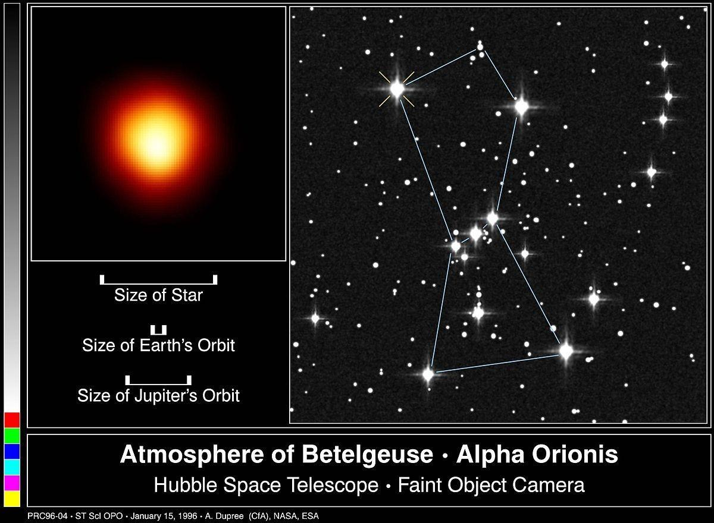
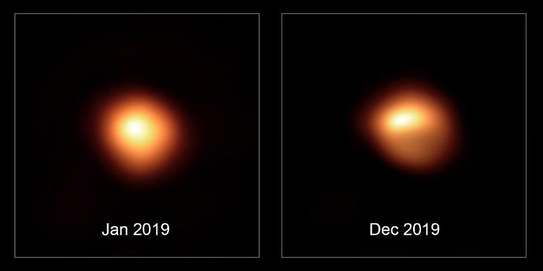
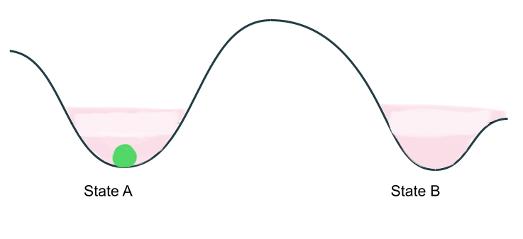
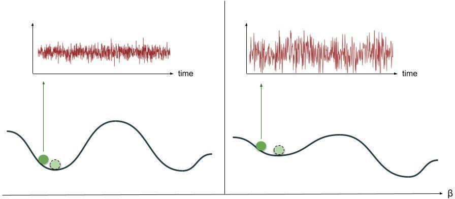
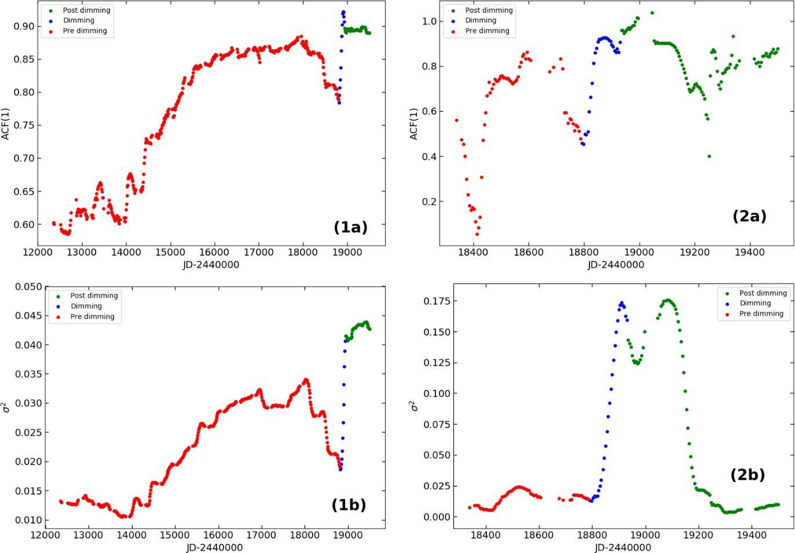
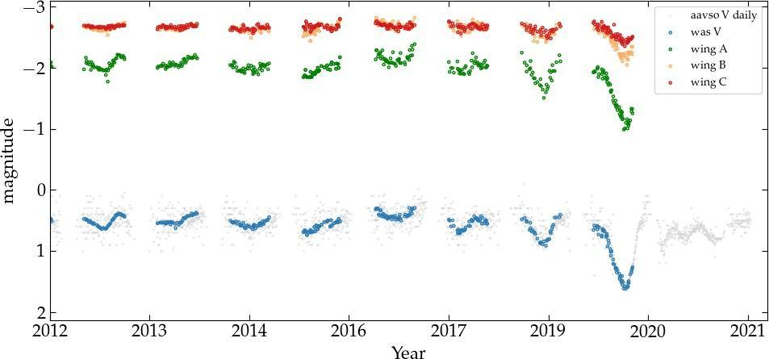
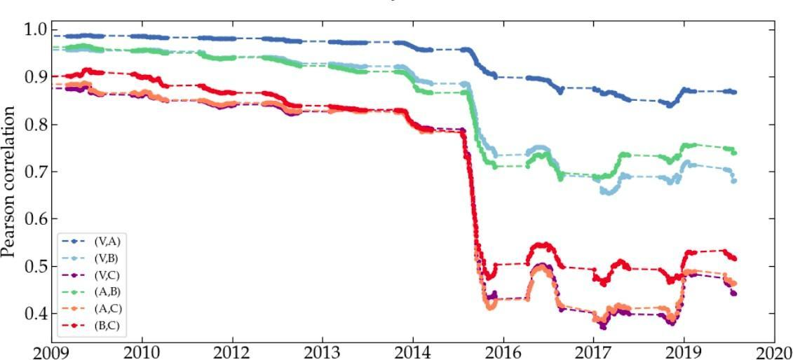

The Great Dimming of Betelgeuse: A Stellar Tipping Point?
The Great Dimming of Betelgeuse (alpha Orionis) in late 2019 puzzled astronomers across the globe. The star appeared the faintest in all its modern recorded history. The mystery mounted as it quickly regained brightness in the next few months, and showed interesting patterns of light variations post dimming. Previously, we had investigated the light curve of Betelgeuse from the perspective of nonlinear dynamics and time series analysis (George et al. 2020). We found signatures of a dynamical transition causing a permanent change in the pulsation dynamics of the star. Here, we discuss these results and present further evidence obtained by analysing multiwavelength data from the star, including visible and infrared radiation.
Introduction
It is easy to spot the constellation Orion in the summer night sky—it looks like a hunter or a shepherd with its waist (or belt) characterised by three stars in a straight line. The shoulder of Orion, Betelgeuse, varies in brightness irregularly, so much so that these variations are noticeable to the naked eye! It is therefore classified as a semiregular variable star—an object of fascination since ancient times.

Figure 1: (left) The star Betelgeuse (as seen by the Hubble telescope) and its size in comparison to Earth’s and Jupiter’s orbit. (right) Location of Betelgeuse in the Orion constellation. Source: http://hubblesite.org/newscenter/archive/1996/04/ Credit: Andrea Dupree (Harvard-Smithsonian CfA), Ronald Gilliland (STScI), NASA and ESA.
The brightness of astronomical objects is measured in terms of apparent magnitude: a reverse logarithmic scale to measure how bright the object appears from the Earth. The full moon registers at about -12.9 on this scale while the Sun is at -26.7. For pulsating variable stars, this quantity changes periodically as the star repeats cycles of expansions and contractions. Some stars pulsate in a simple periodic manner (corresponding to the so-called fundamental frequency) while others show a more complicated pattern with interfering periods (or frequencies). These additional periods (or corresponding frequencies) can be identified using complex analysis of the light curve.
Analysis of the light curve of Betelgeuse shows a primary period of ~425 days, a secondary period of ~5.9 years and a possible tertiary period of ~180 days. Following these periodicities, its visible brightness can usually go as high as 0.0 and as low as 1.3 in apparent magnitude. At 9 million years old, it is expected to go supernova in the next 100,000 years, and when it does, it will be a spectacular event in the night sky (if we survive until then). Perhaps for this reason, speculations of the impending supernova made headlines when an unprecedented dimming in the star was reported in late 2019 by Prof. Edward Guinan in the Astronomer’s Telegram. With a reported apparent magnitude of 1.5614, it was the faintest in its history of modern observation.

Figure 2: Betelgeuse seen with VLT/SPHERE-ZIMPOL before (January 2019) and during (December 2019) the Great Dimming. © ESO/M. Montargès et al.
Several hypotheses have been suggested to explain the unprecedented event. These include formation of a dust cloud, gigantic star spots, or an overlapping of the primary and secondary periods. The observed dimming was later confirmed in Infrared as well (Harper et al., 2021), complicating the mystery because the greater part of its radiation actually belongs to the infrared/near-infrared spectrum. Now, like all stars, Betelgeuse emits radiation at all parts of the electromagnetic spectrum, but the intensity at a given wavelength is governed by different factors. The surface temperature, for example, governs the peak observed in the thermal spectrum but there could be localised temperature changes on the surface (star spots), driven by large convection cells. Presence of dust and gas in the circumstellar environment affects the visible region and causes scattering in the UV. Any changes in pulsation also affects the different layers of the star, reflected as variations in different wavelengths. Moreover, these phenomena can happen together, further complicating the interpretation of observed radiation. In the context of Great Dimming of Betelgeuse, it therefore makes sense to ask whether it was a temporary, peripheral phenomenon (such as star spots or dust cloud), or something else, such as changes to the pulsation dynamics (which would likely affect the star as a whole). With this perspective, we investigated the light curve of the star prior to the dimming in all these wavelengths. We start by treating the star as a dynamical system.
Multistable dynamical systems
Loosely speaking, a dynamical system is one that evolves in time according to a set of predefined rules. Mathematically, it is a system whose behaviour in time is described by a set of differential equations, subject to some parameters and initial conditions (and external influences). Swinging pendula, celestial bodies in motion, population growth in ecosystems, neuronal synapses, etc., can all be studied as dynamical systems. Some of these systems can exist in one of many possible states. Such multi-stable systems are very interesting and can serve as models of real systems. Let us understand them with the help of a toy model with two possible stable states as illustrated in figure 3:

Figure 3: Schematic representation of a multistable dynamical system. It can be in any state on the curve depending on parameters and initial state, etc. But given enough time, it will occupy either of the stable states, A or B (indicated by the green ball).
Now, when the system existing in state A is perturbed a little, it oscillates around and eventually settles to A. Alternatively, if initially in state B, and given some tiny perturbation, it will eventually settle back down to B.
A critical transition in such a system refers to a sudden change in the state, leading to a contrasting dynamics. In our example, it would mean the system going from A to B (or vice-a-versa). The melting of sea ice in recent times and the historically green Sahara becoming a desert, are often cited as examples of such transitions. These transitions are notoriously difficult to anticipate because they happen suddenly. Such transitions are ubiquitous but most recognized in ecology, psychology, and climate. In recent decades, a whole body of literature has focused on the development of so-called Early Warning Signals (EWS), that detect such transitions well in advance. Most of these EWS rely on the assumption of Critical Slowing Down.
Critical Slowing Down and EWS
Let us imagine that the structure (or stability landscape) from figure 3 is governed by a system parameter β. Increasing β makes the well corresponding to state A shallower, decreasing the system resilience in this state. Decreased resilience implies that any displacement from state A will now be endured longer, increasing correlation in time. This will also reflect in longer return times (captured in recurrence based quantifiers) and increased fluctuations, causing large variance. This phenomenon is commonly known as Critical Slowing Down (CSD).

Figure 4: In normal conditions (left), small perturbations to the stable state A do not last long and fluctuations are small. But at higher values of system parameter β, the resilience of system in state A decreases, schematically illustrated here as a shallower structure (right). This results in large fluctuations in time (above, right) even with small perturbations, along with longer return times to the stable state.
At a certain point, the system reaches a tipping point where the tiniest of disturbance can take the system to the alternate stable state, B. This is called bifurcation-induced tipping (there also exist other types of tipping such as noise-induced tipping and rate-induced tipping, which are beyond the scope of discussion of this article). At this point, the resilience indicators show characteristic trends such as increase in statistical variance (due to perturbations persisting over long time), autocorrelation at lag-1 (correlation in the present state and immediate past state), increase in Hurst exponent (a measure of autocorrelations in the data over different time lags), etc. Similarly, longer return times cause systematic trends in recurrence-based quantifiers. Such trends indicate the existence of a tipping point and are therefore collectively known as Early Warning Signals (EWS) of a dynamical transition. It can be noted that although the example discussed here is a very simple one, CSD and associated EWS have been applied in more nuanced contexts in different areas ranging from psychology, finance, ecology and climate change, etc.
Critical transition in Betelgeuse
Coming back to Betelgeuse, we considered it as a dynamical system and analysed the light curve data collected by the The American Association of Variable Star Observers (AAVSO). We identified some of the EWS in this data prior to dimming. The process consists of taking subsequent windows (sections) of the light curve in a sliding fashion (i.e. with some overlap), moving a few data points at a time. Then, statistical measures for these windows are calculated and plotted against time, as shown in the figure 5.

Figure 5: Variation in the (a) Autocorrelation at lag 1 and (b) Variance calculated from the light curve of Betelgeuse upto the dimming (red), during the dimming (blue) and post dimming (green). The left panels (figures 1a and 1b) show the variation from 1990 onwards using a window size of 300 points on data binned every 10 days. The right panels zoom into a region around the dimming, with data binned every 5 days with a window size of 40. Based on the data from AAVSO database.
As we can see, these measures rise prior to the dimming, and serve as strong evidence of a dynamical transition preceded by CSD. Now, we know that the variability in the light curve of Betelgeuse is primarily governed by pulsation. EWS in the data, therefore, hint at a transition affecting its pulsation dynamics. Of course, the credibility of these results relies on statistical significance (further details in the paper). However, there is another way we can verify the existence of a transition—by looking at the variation in other wavelengths.
Variations in other wavelengths
The radiation of a star comprises of different components of the electromagnetic spectrum. These components originate due to different stellar processes. In the case of Betelgeuse, the greatest part of electromagnetic radiation is in the infrared. In fact, Betelgeuse is the brightest star in infrared as seen from Earth! Naturally, the variations in this part of the spectrum are highly relevant to understand the dynamics of Betelgeuse. The multiwavelength data discussed in the paper has been taken with permission from Harper et al. (2021). It consists of a simplified three-filter system devised by Wing et al. (1992) for red variable stars. Wing A filter is dominated by the TiO 719 nm (narrow band) and the Wing B and C filters are continuum bands centred around 750 nm and 1024 nm respectively. These filters are carefully selected to measure the infrared magnitude, colour and the spectral type of the star. The primary use of this filter system is for estimating surface temperature of these stars. In addition, this data also includes measurements in the V-band centred around 555 nanometer (nm), that can be compared to the same region in the AAVSO data.

Figure 6: Variation of intensity in Betelgeuse, as captured in Vis/V band AAVSO data (grey), V-band photometry from Wasatonic laboratory (blue), and Infrared Wing three-filter (A: green, B: orange, C: red) data.
It is apparent from figure 6 that the dimming was simultaneous in all wavelengths! Further, we calculated the cross-correlation among these wavelengths, and found a systematic decrease before dimming as shown in figure 7:

Figure 7: Pearson correlation coefficient calculated for each pair of wavelengths, indicated here in different colours. These correlations in time decrease prior to dimming.
The dimming could be just a normal cycle of the star but brightness variations in the past have never been so extreme (within the limits of available data). Since the infrared radiation comes from deeper layers of the star, we conclude that the dimming was not a surface phenomena. Further, since the dimming was simultaneous in all bands, we can argue that it was related to a dynamical process that affected the whole star, making change in pulsation dynamics the natural answer.
The current state of the (stellar) matter
Some of the measurements post dimming seem to validate the dynamical transition. For example, the brightening of the star was almost as quick as the dimming, and the next seasonal cycle was ‘rounder’ than ever! Moreover, later studies found increased prominence of the ~180 day period. These observations suggest a permanent change to the pulsation dynamics.
The Great Dimming of Betelgeuse continues to astonish us, even with all the new data we have from Hubble and other sources. Possibilities range from a dynamical transition or overlapping of periodic cycles, to a dust cloud or a large star spot, but (sadly) almost certainly not a supernova! Betelgeuse is a complex star—full of mystery—and we excitedly await to observe and understand more about it in the future.
Original paper: Evidence for dynamical changes in Betelgeuse using multi-wavelength data
First Author: Sneha Kachhara
Co-authors: Sandip V. George, Ranjeev Misra, and G. Ambika
First author’s Institution: Indian Institute of Science Education and Research (IISER) Tirupati, Tirupati, India